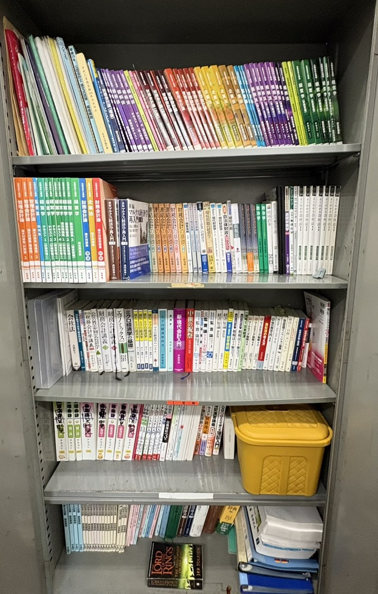

志雲会専用研究室

2023年度より、多摩学生研究棟（炎の塔）1階に志雲会専用研究室を設置しています。
本会では、原則として希望する会員全員に個人専用席＋ロッカーを付与しています。
研究棟内はWi-Fiも完備されており、Web講義の視聴など365日快適に学習できる環境です。
また、食事や会員同士の交流ができる休憩ラウンジも併設されています。
施設利用に関するご案内
施設維持費
1,000円／月（学校法人中央大学へ納入）
利用選考
希望者が座席数を超えた場合、および大学の規定により、
当会を含む炎の塔内の全公認会計士受験団体において
施設利用のための内部選考を実施しています。
個人専用の固定デスク

希望した会員一人ひとりに専用デスクを割り当てます。
席取りの必要がなく、いつでも決まった環境で学習に集中できます。
デスクはパソコン等を置いた上でもテキストを広げられる十分な広さがあり、
教材類は自分のデスクに置いたまま帰宅できるのが最大の魅力です。
さらに、各デスクに専用コンセント（2口）を完備しています。
共用本棚

歴代の先輩が寄贈した大学授業のテキストが豊富にそろっています。
多くの教科書を自分で購入する必要がなく、
高額になりがちな教材費を抑えることができます。
また、公認会計士試験関連の資料も充実しており、
受験生にとって非常に心強い環境です。